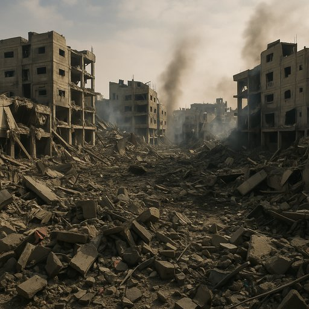

Publicado em 2025-05-31 14:11:00
Por Francisco Gonçalves
Enquanto escrevo estas linhas, há crianças soterradas sob os escombros de Gaza. Mães sem filhos. Famílias sem casas. Esperanças sem futuro. Do outro lado da fronteira, também há medo, há alarme, há ódio. Mas o que me custa mesmo é este sofrimento que já se tornou rotina televisiva, ruído de fundo, estatística desumana.
E pergunto: até quando?
O Hamas diz lutar pelo povo palestiniano. Diz resistir. Mas que resistência é esta que sacrifica o seu próprio povo em nome de uma libertação que nunca chega? Que libertação é essa que se constrói sobre os corpos de inocentes, sobre os escombros de escolas e hospitais, sobre o desespero? Uma luta que transforma Gaza numa prisão a céu aberto e os seus habitantes em mártires involuntários?
Israel, com o seu poderio militar esmagador, responde com fúria. A cada foguete, cem bombas. A cada ataque, bairros inteiros varridos do mapa. Dizem que é defesa. Dizem que é legítimo. Mas onde termina a defesa e começa a vingança programada? Quando a força se transforma em abuso? Quando o Estado se torna máquina de punição coletiva?
Há décadas que este ciclo se repete. Como um relógio infernal: provoca-se, ataca-se, vinga-se, enterra-se. E recomeça. Sempre com os mesmos rostos desfeitos, as mesmas mãos vazias, o mesmo olhar sem horizonte.
E no meio disto tudo, o povo de Gaza — miserável, encurralado, espezinhado por dois carrascos:
Sim, o Hamas é responsável por manter acesa a fogueira da guerra. É o primeiro a saber que cada ataque provocará cem retaliações. Mas não se importa. Porque a dor do povo tornou-se arma política. Porque quanto mais se sofre, mais se legitima a retórica da resistência. Porque o sofrimento tornou-se propaganda.
Mas também não nos iludamos: Israel exagera. Exagera nos ataques, exagera na punição coletiva, exagera na arrogância de quem tudo pode e tudo quer controlar. Esquece-se que um povo humilhado não desaparece — revolta-se. E a humilhação diária é o maior gerador de ódio e vingança.
Este conflito é uma tragédia sem autores inocentes. Mas as vítimas são sempre as mesmas: os pobres, os civis, os que não escolhem mísseis nem bandeiras, apenas sobrevivem.
Enquanto o Hamas continuar a atacar, sabendo que isso trará mais desgraça, e enquanto Israel continuar a responder com força desmedida, fingindo que destruir Gaza é destruir o "terror", não haverá paz, nem justiça, nem solução.
Gaza é hoje o retrato do fracasso da Humanidade.
Um espelho partido onde se refletem as nossas falências coletivas.
E enquanto os senhores da guerra escrevem comunicados, os órfãos cavam túmulos com as mãos.
E o mundo o que faz ?
"E o mundo? O mundo divide-se em condenações mornas, em hashtags e cimeiras inúteis.
A ONU — essa catedral da impotência — lança comunicados que se perdem no vento.
E os países árabes, que juram amizade eterna ao povo de Gaza,
limitam-se a discursos ocos, interesses estratégicos e alianças veladas.
Ninguém quer realmente salvar Gaza — porque Gaza não tem petróleo,
não tem valor comercial, nem voto nas bolsas.
Tem apenas gente — e, pelos vistos, isso já não basta."
Faça o download do artigo completo aqui: